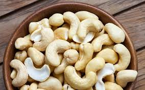

Giá cà phê hôm nay tại đaklak
thứ 7,15/1/2022,07:00
Giá cà phê hôm nay 15/1, Lượng robusta bán ra lớn, giá cà phê tuần này còn giảm?
Giá Điều hôm nay tại đaklak
thứ 2,17/1/2022,07:00
Cập nhật giá hạt điều được khảo sát qua các vựa, giá điều nhân mới nhất trên thị trường Việt Nam.
Bản sắc- Văn hóa- Dân tộc
Còn thương nhau thì về Buôn Ma Thuật
Riệu cần Ymiên
thứ 2,17/1/2022,07:00
Rượu Cần Y Miên là sản phẩm truyền thống của người đồng bào Tây nguyên, thường được sử dụng trong các dịp lễ hội hoặc ngày tết cổ truyền.
Gía ca cao đaklak
thứ 4,12/1/2022,22:00
ca cao Đăk Lăk vẫn được ưa chuộng. Bởi nó có chất lượng sản phẩm tốt cùng và giá cả phải chăng. . . . . . . . ..........................................................
Sầu riêng đăk lăk
thứ 2,17/1/2022,22:00
người trồng sầu riêng ở tỉnh Đắk Lắk đã vào chính vụ thu hoạch. Sầu riêng được mùa nhưng giá rớt thê thảm, khiến người trồng sầu riêng ngán ngẩm.
Tây Nguyên liệu chúng ta có biết
thứ 4, 5/1/2021, 12:00
Tây Nguyên là vùng cao nguyên, phía bắc giáp tỉnh Quảng Nam, phía đông giáp các tỉnh Quảng Ngãi, Bình Định, Phú Yên, Khánh Hòa, Ninh Thuận, Bình Thuận, phía nam giáp các tỉnh Đồng Nai, Bình Phước,

phía tây giáp với các tỉnh Attapeu (Lào) và Ratanakiri và Mondulkiri (Campuchia).Trong khi Kon Tum có biên giới phía tây giáp với cả Lào và Campuchia, thì Gia Lai, Đắk Lắk và Đắk Nông chỉ có chung đường biên giới với Campuchia. Còn Lâm Đồng không có đường biên giới quốc tế.
folow Me
LIÊN HỆ
điện thoại:0935817644
email: quynhvmps22029@fpt.edu.vn